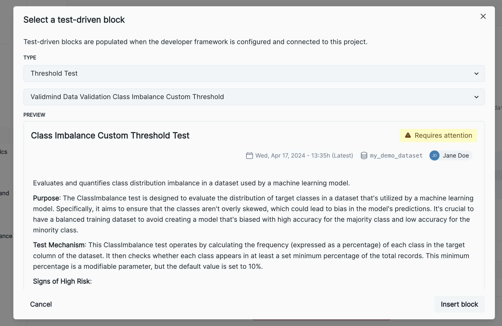

%pip install -q validmindHow to Run Dataset Based Tests
The ValidMind developer framework provides a run_test function that allows you to run built-in or custom tests that take any dataset or model as input. These tests generate outputs in the form of text, tables and images that get populated in model documentation.
In this notebook, we will take you through the process of learning how to find tests, understand how to initialize a ValidMind dataset and pass it to the run_test function, for any test that takes a dataset input.
Pre-Requisites
We recommended that you have gone through the explore_tests.ipynb notebook to understand the basics of how to find and describe all the available tests in the developer framework.
High-Level Steps
- Listing and filtering available tests
- Building a sample dataset
- Understanding how to initialize a VM dataset
- Running a test with the sample dataset
- Running a test that accepts parameters
Before you begin
New to ValidMind?
For access to all features available in this notebook, create a free ValidMind account.
Signing up is FREE — Sign up now
If you encounter errors due to missing modules in your Python environment, install the modules with pip install, and then re-run the notebook. For more help, refer to Installing Python Modules.
Install the client library
Initialize the client library
ValidMind generates a unique code snippet for each registered model to connect with your developer environment. You initialize the client library with this code snippet, which ensures that your documentation and tests are uploaded to the correct model when you run the notebook.
Get your code snippet:
In a browser, log into the Platform UI.
In the left sidebar, navigate to Model Inventory and click + Register new model.
Enter the model details, making sure to select Binary classification as the template and Marketing/Sales - Attrition/Churn Management as the use case, and click Continue. (Need more help?)
Go to Getting Started and click Copy snippet to clipboard.
Next, replace this placeholder with your own code snippet:
# Replace with your code snippet
import validmind as vm
vm.init(
api_host="https://api.prod.validmind.ai/api/v1/tracking",
api_key="...",
api_secret="...",
project="...",
)Listing and filtering available tests
Before we run a test, let’s find a suitable metric for this demonstration. Let’s assume you want to generate the pearson correlation matrix for a dataset. In the explore_tests.ipynb notebook we saw how to pass a filter to the list_tests function. Let’s do the same here to find the test ID for the pearson correlation matrix:
vm.tests.list_tests(filter="PearsonCorrelationMatrix")From the output, you can see that the test ID for the pearson correlation matrix is validmind.data_validation.PearsonCorrelationMatrix. The describe_test function gives you more information about the test, including its Required Inputs:
test_id = "validmind.data_validation.PearsonCorrelationMatrix"
vm.tests.describe_test(test_id)Since this test requires a dataset, it should throw an error if you were to run it without passing a dataset input:
try:
vm.tests.run_test(test_id)
except Exception as e:
print(e)Create a sample dataset
Now, let’s build a sample dataset so you can generate its pearson correlation matrix. The sklearn make_classification function can generate a random dataset for testing:
import pandas as pd
from sklearn.datasets import make_classification
X, y = make_classification(
n_samples=10000,
n_features=10,
weights=[0.1],
random_state=42,
)
X.shape
y.shape
df = pd.DataFrame(X, columns=[f"feature_{i}" for i in range(X.shape[1])])
df["target"] = y
df.head()How to initialize a ValidMind dataset
ValidMind dataset objects provide a wrapper to any type of dataset (NumPy, Pandas, Polars, etc.) so that tests can run transparently regardless of the underlying library. A VM dataset object can be created using the init_dataset function from the ValidMind (vm) module.
This function takes a number of arguments:
dataset— the raw dataset that you want to provide as input to testsinput_id- a unique identifier that allows tracking what inputs are used when running each individual testtarget_column— a required argument if tests require access to true values. This is the name of the target column in the dataset
Below you can see how to initialize a VM dataset for the sample df you created previously:
vm_dataset = vm.init_dataset(
df,
input_id="my_demo_dataset",
target_column="target",
)You can now call run_test with the new vm_dataset object as input:
result = vm.tests.run_test(
test_id,
inputs={"dataset": vm_dataset},
)This dataset can also be used for any other test that requires a dataset input. Let’s try to find a “class imbalance” to understand the distribution of the target column in the dataset.
We’ll use list_tests again to showcase how to filter tests for tabular data:
sorted(vm.tests.list_tags())vm.tests.list_tests(tags=["binary_classification", "tabular_data"])The test ID for the class imbalance test is validmind.data_validation.ClassImbalance. If you describe this test you will find that it also accepts some parameters:
vm.tests.describe_test("validmind.data_validation.ClassImbalance")The min_percent_threshold will allow you configure the threshold for an acceptable class imbalance. Let’s run the test without any parameters to see its output using a default value for the threshold. We also call the log method on the result to send the results of the tests to the ValidMind platform.
result = vm.tests.run_test(
"validmind.data_validation.ClassImbalance",
inputs={"dataset": vm_dataset},
)
result.log()This test passes the pass-fail criteria with the default threshold of 10%. Let’s try to run the test with a threshold of 20% to see if it fails. Notice the use of the “custom_threshold” result_id in the test ID. This allows you to submit individual results for the same test to the platform, as we’ll see in the next section.
result = vm.tests.run_test(
"validmind.data_validation.ClassImbalance:custom_threshold",
inputs={"dataset": vm_dataset},
params={"min_percent_threshold": 20},
)
result.log()Adding test results to documentation
The previous result shows that the test doesn’t pass the threshold of 20% for class imbalance. With these results logged, you can now add them to your model documentation. To do this, go to the documentation page of the model you connected to above and navigate to Data Preparation -> Data Description section. Then hover between any existing content block to reveal the + button as shown in the screenshot below.

Now click on the + button and select the Test-Driven Block option. This will open a dialog where you can select Threshold Test as the type of test and the Class Imbalance Custom Threshold Test from the list of available metrics. You can preview the result and then click Insert Block to add it to the documentation.

The test should match the result you see above.
Next steps
In the next notebook, you will learn how to run tests that require a dataset and model as inputs. This will allow you to generate documentation for model evaluation metrics such as ROC-AUC, F1 score, etc. for your model.